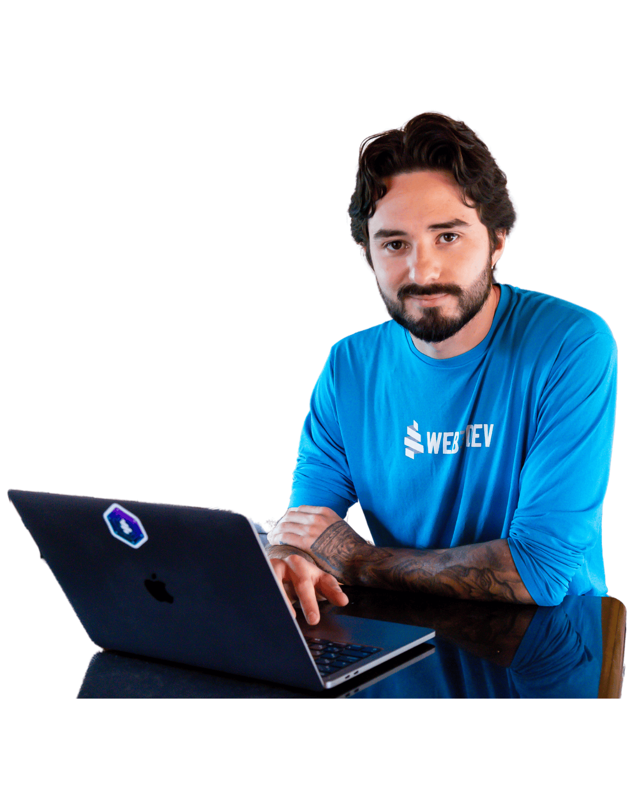

Web3 Builder & Community Leader with 10+ years in tech and 5 years full-time in Web3. Founder of WEB3DEV, PBA4 Alumni and spiritualist nomad traveler. Passionate for sports and science.
MY MANIFESTO
A community of 10k+ developers across Latin America, focused on training Web2 developers in Rust and Substrate.
Developed protocol adapters to distribute liquidity across DeFi lending platforms and multi-asset AMMs.
A Web3 legal-tech platform and NFT marketplace for legal services and intellectual property.
Multi-chain trading bot API.
InternalAutomated $7M DeFi fund.
InternalI've been in the blockchain space since 2013, focused on developer education and community building across Latin America. I created the first full Portuguese-language course on Solidity and EVM development.
I've been a digital nomad for 7 years, visiting 15 countries across multiple continents, embracing different cultures and communities. I'm an active member in several high-signal private communities focused on smart contracts, protocol design, and Web3 infrastructure, fostering global connections through technology and shared interests.
I embrace Flag Theory as a strategic approach to global citizenship, diversifying my presence across different jurisdictions. This philosophy aligns with my belief in personal sovereignty and the importance of having options in an increasingly complex world, while maintaining strong connections to multiple communities worldwide.
I'm a dedicated Vipassana meditation practitioner. I cherish silencing the noisy mind and enjoying the full presence of existence. I believe in spirits and reincarnation, but not with blind faith.
I'm a windsurf athlete and outdoor sports lover. Currently, I'm into Longboarding, Sandboarding, Kayaking, and Calisthenics, and I've recently begun an intense course on flying gliders.
I've organized large-scale bootcamps, hosted workshops on DeFi, Governance and DAOs, published technical content in both Portuguese and English, and led an OpenGov proposal to fund ongoing education.
I've been in the blockchain space since 2013, when I discovered Bitcoin and began teaching myself Computer Science. After leaving college due to the lack of blockchain-related courses, I committed fully to self-education and the advancement of Web3 knowledge in Latin America.
As the current leader of WEB3DEV, a community of over 10,000 developers across Brazil and Latin America, I've restructured the organization's focus entirely around Rust, Substrate, and the Polkadot tech stack. I'm also a Polkadot Blockchain Academy (PBA4) Alumni and a member of the Decentralized Voices Cohort 5.
I'm a windsurf athlete and outdoor sports lover, a dedicated Vipassana meditation practitioner, and I enjoy deep conversations on philosophy and spirituality. I've been a digital nomad for 7 years and now I'm moving to New Zealand and planning to stay long-term and explore as much as I can.
Some of my most impactful recent contributions include organizing the Rust State Machine Bootcamp, which introduced Substrate basics to over 500 developers in its first cohort, and hosting live technical sessions and workshops on Substrate, OpenGov, DAOs, and governance in both Portuguese and English.
I'm a key advocate for Polkadot in Latin America, bridging technical education with grassroots community growth to foster a new generation of developers aligned with the values of decentralization and open-source innovation.
Let's connect 🌊🧘🏽♂️🌀